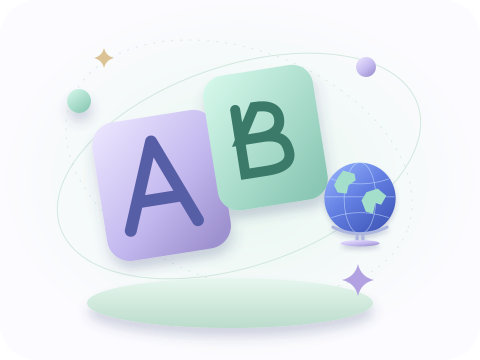

Primary
Build the foundations
Reading, writing, numbers and scientific curiosity, with short activities and time to explain ideas.
Reading & writingNumber senseCuriosity
From first foundations to advanced school study. Explore the stages and find your child’s next step.

There’s no single starting line. Find the stage closest to your child’s current course, then shape the next step around their understanding.
Reading, writing, numbers and scientific curiosity, with short activities and time to explain ideas.
Develop independent study habits as subjects become more detailed and expectations grow.
Work through difficult concepts, school assessments and GCSE or IGCSE topics with focused practice.
Discuss advanced school subjects, A Level, FSc and Grade 11–12 work using your precise course outline.
School-year and grade equivalents vary. Your school course and current understanding guide the plan.
Find your starting pointTell us the school year, curriculum and current topic.
See where understanding feels secure and where support would help.
Choose a clear learning goal, lesson rhythm and starting point.